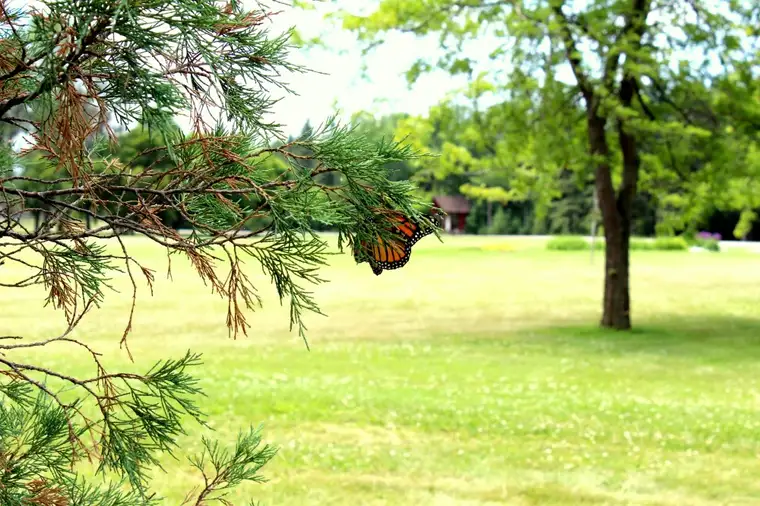

By some divine “fluke” in early 2011, I became terrifically blessed.
An editor couldn’t cover the solemn profession of vows of a Carmelite sister in our area so asked if I could take the assignment. I knew, vaguely, there was a monastery somewhere in our region, but really, had no clue what I was getting myself into.

Nor did I have any notion of what Carmel of Mary would come to mean to me over the course of the next few years. I didn’t know it would feed my soul like no other place in the world ever has; that I would go to Mass and be covered with so much interior warmth and peace that I would have to force myself to leave the sanctuary, so drawn would I be to the Lord here.

{kind=link}
There was such beauty amidst the simplicity.
{kind=link}

A relationship with the sisters began to build, and because of that, I have had the great privilege of having been surrounded by the safe haven of the monastery many times over in these past years.

I have seen this lovely lady below, whom I first met in a field filled with snow, in every season. And with each advancing season she looks more radiant. Carmel wouldn’t be right without a visit with Our Blessed Mother.

Though just a statue, her likeness puts me in touch with the real soul that exists simultaneously, and when I look up at her and utter my words of prayer and praise to God through her, I feel her. I know that she and the Lord are alive and listening to me, right then and there.
{kind=link}
Carmel is a place an introvert like me can appreciate. The introvert souls needs time, and space, and a way to plunge in deeply. Carmel has given me these opportunities, and I am eternally — and I mean that — grateful.
{kind=link}
I have shared little snippets of this incredible place here on my blog over the years, but there is so much that I haven’t — that I wouldn’t. It is a hidden place and that is how it works best. To expose all of the inner workings would be to, in some way, remove the full blessing of the place. I’ve only skimmed the surface myself in what I have seen and experienced. But the glimpse has offered a snapshot of heaven itself. And in time I will share a little more. Some. But not all.
I have never felt so at rest as at Carmel, so in touch with every sound and sight around me, so unburdened.
This has to be what heaven feels like, and if so, then it is a very beautiful, incredible, joy-filled place totally worth striving toward and even suffering to reach.
I am so grateful to have been given this gift, and even more, to have had the chance to bring my dear friend Vicky, a fellow introvert, along on many of my visits. Our sojourns there have been a time of shared rediscovery and renewal. Undoubtedly, Vicky’s grace-filled presence makes the visits even more meaningful.
{kind=link}
“Friends are like flowers in the garden of life.”
{kind=link}
Thank you, God, for friendships, and inspiring places like Carmel to exist; places where introverts like me can go and go deeply into your bounteous peace, to refresh and come to know you even more.
{kind=link}